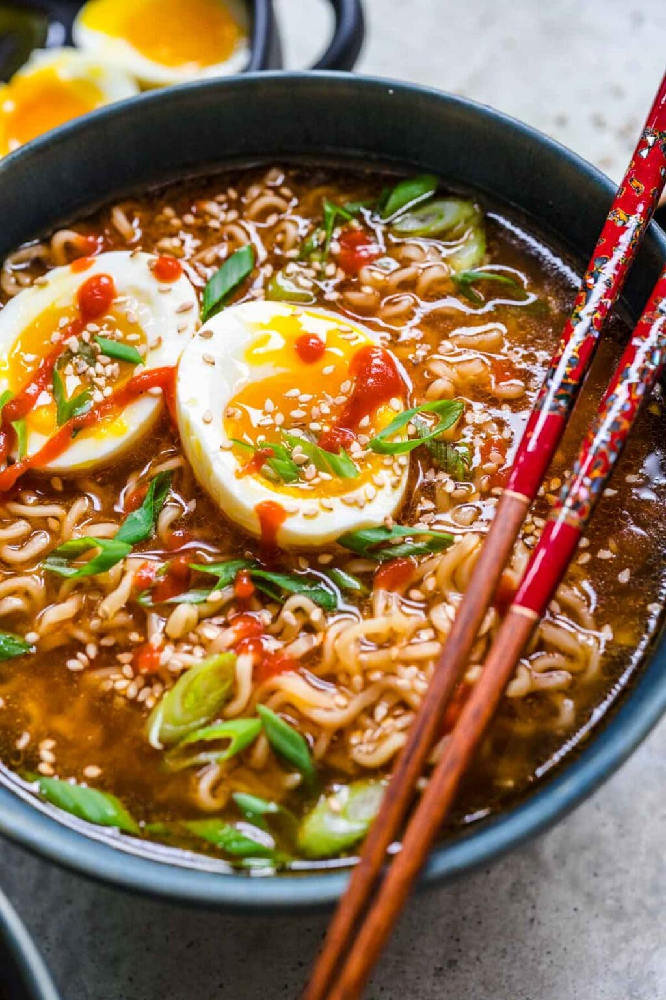

Spicy Ramen

Description
“This spicy ramen bowl features rich broth, tender noodles, and a mix of fresh toppings like green onions and a soft‑boiled egg.
The dish combines heat, savory depth, and comforting textures, giving a good visual preview of the flavors you’ll make in this recipe.”
Ingredients:
- 4 eggs
- 6 cups chicken stock
- 2 cups diced rotisserie chicken meat
- 2 cups fresh spinach
- 1 tablespoon rice vinegar
- 2 tablespoon soy sauce
- 2 tablespoon sriracha sauce (adjust to taste)
- 2 cloves garlic, grated
- 1 (1 inch) piece fresh ginger, grated
- 1 (12 ounce) package ramen noodles (discard seasoning packets)
Toppings:
- 4 green onions, chopped, or to taste
- 2 Thai chile peppers, stemmed and coarsley chopped, or to taste
- 2 tabelspoons sriracha sauce,or to taste
Directions:
- Bring a small pot of water to a boil. Reduce heat to low and gently lower eggs into the water. Cook for 8 minutes. Remove eggs from hot water, cool under cold running water, and peel.
- Combine chicken stock, chicken meat, spinach, soy sauce, sriracha sauce, rice vinegar, garlic, and ginger in a large pot. Simmer until heated through, about 10 minutes.
- Meanwhile, bring a saucepan of water to a boil. Cook ramen noodles for 3 minutes. Drain.
- Ladle noodles into bowls and cover with soup. Add 1 soft-boiled egg to each bowl. Garnish soup with seaweed, green onions, chile peppers, and sriracha sauce.
Home